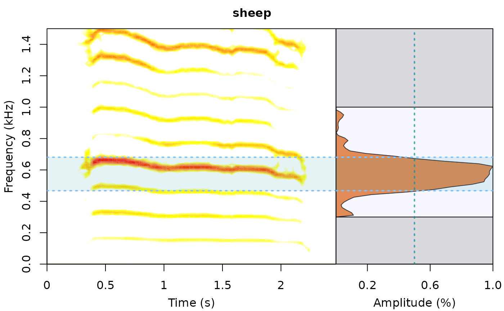

freq_range_detec detects the frequency range of acoustic signals on wave objects.
Usage
freq_range_detec(
wave,
wl = 512,
fsmooth = 0.1,
threshold = 10,
dB.threshold = NULL,
wn = "hanning",
flim = NULL,
bp = NULL,
fast.spec = FALSE,
ovlp = 50,
pal = reverse.gray.colors.2,
widths = c(2, 1),
main = NULL,
plot = TRUE,
all.detec = FALSE
)Arguments
- wave
A 'wave' object produced by
readWaveor similar functions.- wl
A numeric vector of length 1 specifying the window length of the spectrogram, default is 512. This is used for calculating the frequency spectrum (using
meanspec) and producing the spectrogram (usingspectro, ifplot = TRUE).- fsmooth
A numeric vector of length 1 to smooth the frequency spectrum with a mean sliding window in kHz. This help to average amplitude "hills" to minimize the effect of amplitude modulation. Default is 0.1.
- threshold
Amplitude threshold (%) for frequency range detection. The frequency range (not the cumulative amplitude) is represented as percentage (100% = highest amplitude). Default is 10. Ignored if 'dB.threshold' is supplied.
- dB.threshold
Amplitude threshold for frequency range detection (in dB). The value indicates the decrease in dB in relation to the highest amplitude (e.g. the peak frequency) in which range will be detected. For instance a
dB.threshold = 20means that the amplitude threshold would be 20 dB below the highest amplitude. If provided 'threshold' is ignored. Default isNULL. Note that the power spectrum is normalized when using a dB scale, so it looks different than the one produced when no dB scale is used (e.g. when using 'threshold' argument).- wn
Character vector of length 1 specifying window name. Default is "hanning". See function
ftwindowfor more options. This is used for calculating the frequency spectrum (usingmeanspec) and producing the spectrogram (usingspectro, ifplot = TRUE).- flim
A numeric vector of length 2 for the frequency limit of the spectrogram (in kHz), as in
spectro. Default isNULL.- bp
A numeric vector of length 2 for the lower and upper limits of a frequency bandpass filter (in kHz) or "frange" to indicate that values in 'bottom.freq' and 'top.freq' columns will be used as bandpass limits. Default is
NULL.- fast.spec
Logical. If
TRUEthen image function is used internally to create spectrograms, which substantially increases performance (much faster), although some options become unavailable, as collevels, and sc (amplitude scale). This option is indicated for signals with high background noise levels. Palette colorsgray.1,gray.2,gray.3,topo.1andrainbow.1(which should be imported from the package monitoR) seem to work better with 'fast.spec' spectrograms. Palette colorsgray.1,gray.2,gray.3offer decreasing darkness levels.- ovlp
Numeric vector of length 1 specifying % of overlap between two consecutive windows, as in
spectro. Default is 50. This is used for calculating the frequency spectrum (usingmeanspec) and producing the spectrogram (usingspectro, ifplot = TRUE).- pal
Color palette function for spectrogram. Default is reverse.gray.colors.2. See
spectrofor more palettes. Palettes asgray.2may work better whenfast.spec = TRUE.- widths
Numeric vector of length 2 to control the relative widths of the spectro (first element) and spectrum (second element).
- main
Character vector of length 1 specifying the plot title. Default is
NULL.- plot
Logical. Controls whether an image file is produced for each selection (in the working directory). Default is
TRUE.- all.detec
Logical. If
TRUEreturns the start and end of all detected amplitude "hills". Otherwise only the range is returned. Default isFALSE.
Value
A data frame with 2 columns for low and high frequency values. A plot is produced (in the graphic device) if plot = TRUE (see details).
Details
This functions aims to automatize the detection of frequency ranges. The frequency range is calculated as follows:
bottom.freq = the start frequency of the amplitude 'hill' containing the highest amplitude at the given threshold.
top.freq = the end frequency of the amplitude 'hill' containing the highest amplitude at the given threshold.
If plot = TRUE a graph including a spectrogram and a frequency spectrum is
produced in the graphic device. The graph would include gray areas in the frequency ranges excluded by the bandpass ('bp' argument), dotted lines highlighting the detected range.
References
Araya-Salas, M., & Smith-Vidaurre, G. (2017). warbleR: An R package to streamline analysis of animal acoustic signals. Methods in Ecology and Evolution, 8(2), 184-191.
Author
Marcelo Araya-Salas (marcelo.araya@ucr.ac.cr)
Examples
{
data(tico)
freq_range_detec(
wave = tico, wl = 512, fsmooth = 0.01, threshold = 1, bp = c(2, 8),
widths = c(4, 2)
)
data(sheep)
freq_range_detec(
wave = sheep, wl = 512, fsmooth = 0.2, threshold = 50, bp = c(0.3, 1),
flim = c(0, 1.5), pal = reverse.heat.colors, main = "sheep"
)
}

#> bottom.freq top.freq
#> 1 0.467689 0.6808449